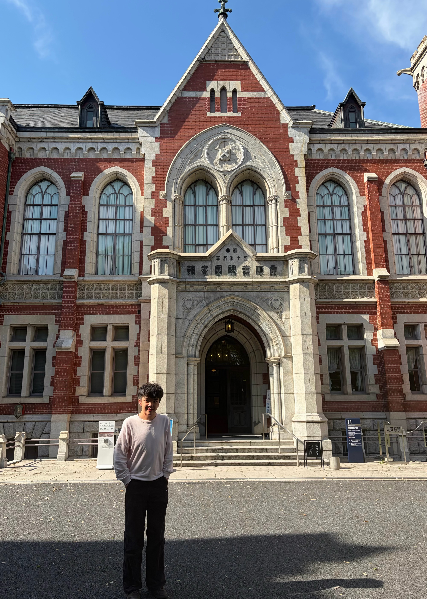

About Me

My name is Tim, and I come from Taiwan. I was born and raised in Taipei City, a vibrant and energetic city where I have lived for 22 years of my life. Growing up in Taipei has shaped my open-minded personality and fueled my curiosity about the world. Currently, my major is Electrical Engineering, a challenging yet fascinating field that allows me to explore modern technology and problem-solving skills.
In April 2026, I embarked on an exciting new journey as an exchange student at the University of Electro-Communications in Tokyo, Japan. I am spending a wonderful half-year semester here until September. Studying at UEC has provided me with a fantastic academic environment to expand my knowledge in electrical engineering, while also giving me the precious opportunity to experience the beautiful Japanese culture and lifestyle firsthand.
One of the best parts of my exchange life here is the incredible people I have met. I am extremely happy that I have made many wonderful friends from different countries and cultural backgrounds all over the world. Whether we are discussing academic topics in class, sharing delicious meals, or playing basketball together on sunny afternoons, interacting with them has truly broadened my horizons and made my time in Japan unforgettable. I look forward to making even more great memories during the rest of my stay!